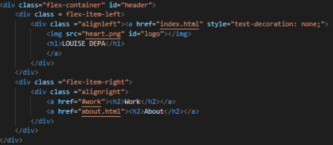
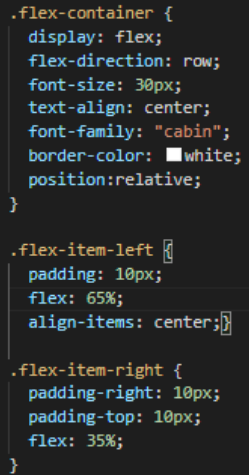
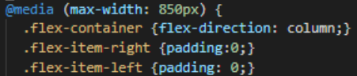
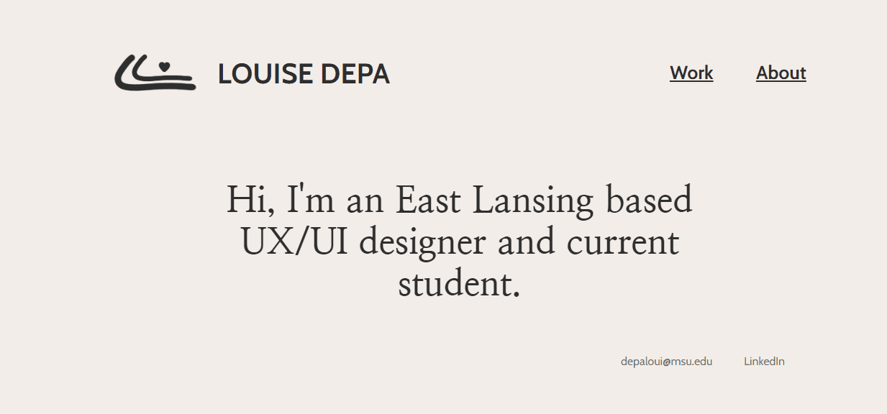

One basic aspect of usability in a website is having your website work on all different sizes of devices, especially mobile phones. This is called responsive web design.
For my website, I really tried to focus on this concept but it wasn’t something that I could just do with the basic CSS knowledge that I had.
In order to create a responsive website and solve the problem I was having, I needed to use the CSS flexbox layout.
Flexbox Layout is something that you can do with CSS in order to have an easy way to lay out and align items in a container, allowing them to change in dimensions in order to best fill the space or the screen.
For example, you can use flexbox to shrink a row of items, and let it change into a column of items on a smaller screen.
This is usually used with media queries.

This is the code I used for my website’s header in order to make it mobile friendly. Above is an image of my html code.
As you can see, both left and right flex items are nested inside the flex container.

As shown in the image of my CSS for this flexbox, the right flex items took up only 35% of the container by having the flex be set to 35%. The right flex item also contained buttons to other pages.

In addition to this, media queries were also used in order to make the flexbox scale up or down in size relative to the screen size.
By using flexbox, I was able to create this responsive, mobile friendly header. It shrinks as the browser width shrank, and also it turned into a column display instead of a row display for better mobile capabilities
I also ended up using flexbox for almost everything else in my website because its a very powerful tool if you want to have a responsive website.

While doing this project, I learned that using flexbox for your website can be an extremely useful part of CSS if you are trying to make a responsive web site.
I initially thought that using flexbox would be super complicated, but it definitely got a lot easier to understand after trying to use it a couple times.
If I were to try to make my website again or do another website, I would definitely start using flexbox right when I start coding in order to get the basic layout of what I wanted my site to be before putting colors and styling in order to not get confused.